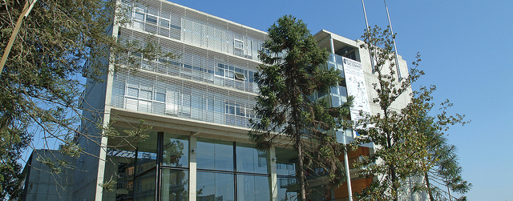

Sedes / Puente Alto



Descripción
Duoc UC sede Puente Alto responde a la visión y misión institucional de acuerdo al desarrollo de carreras profesional y técnicas que necesita nuestro país. Los profesionales egresan siendo capaces de interactuar con las tecnologías que demanda la industria en la implementación de nuevos y más complejos procesos de manufactura que permitirán agregar un valor agregado a la producción nacional y contribuir al desarrollo del país. Esta sede tiene 19 carreras que pertenecen a la Escuela de Informática y Telecomunicaciones, Escuela de Construcción, Escuela de Ingeniería y Escuela de Salud. Por lo mismo, tiene una gran infraestructura que avala el buen aprendizaje de sus alumnos unidos a la misión y visión de Duoc UC. Inserto en una de las comunas con mayor expansión y número de habitantes en la Región Metropolitana, Duoc UC sede Puente Alto cuenta con excelentes alternativas de acceso y un edificio con 13.317 mt2 construidos y distribuidos en más de 6 pisos por cada edificio, con una capacidad total para 4.700 alumnos en jornada diurna y vespertina. Cuenta además con un personal docente y administrativo del mejor nivel, quienes cumplen la tarea de enseñar y formar a los alumnos de la sede.
Carreras que se imparten
Construcción
Ingeniería en Construcción (Diurno/Vespertino)Ingeniería en Prevención de Riesgos (Diurno)
Técnico en Construcción (Diurno/Vespertino)
Técnico en Prevención de Riesgos Pev (Vespertino)
Informática y Telecomunicaciones
Administración de Redes Computacionales (Diurno/Vespertino)Analista Programador Computacional (Diurno/Vespertino)
Ingeniería en Informática (Diurno/Vespertino)
Ingeniería
Ingeniería en Electricidad y Electrónica (Diurno/Vespertino)Ingeniería en Mecánica Automotriz y Autotrónica (Diurno/Vespertino)
Técnico en Electricidad y Electrónica (Diurno/Vespertino)
Técnico en Instrumentación y Automatización Industrial (Diurno/Vespertino)
Técnico en Mecánica Automotriz y Autotrónica (Diurno/Vespertino)
Recursos Naturales
Ingeniería Agrícola (Diurno)Ingeniería en Medio Ambiente (Diurno)
Salud
Fisioterapeuta Deportivo (Diurno)Informática Biomédica (Diurno)
Preparador Físico (Diurno/Vespertino)
Técnico de Enfermería (Diurno)
Técnico de Laboratorio Clínico y Banco de Sangre (Diurno)
Técnico de Radiodiagnóstico y Radioterapia (Diurno)
Técnico en Odontología (Diurno)